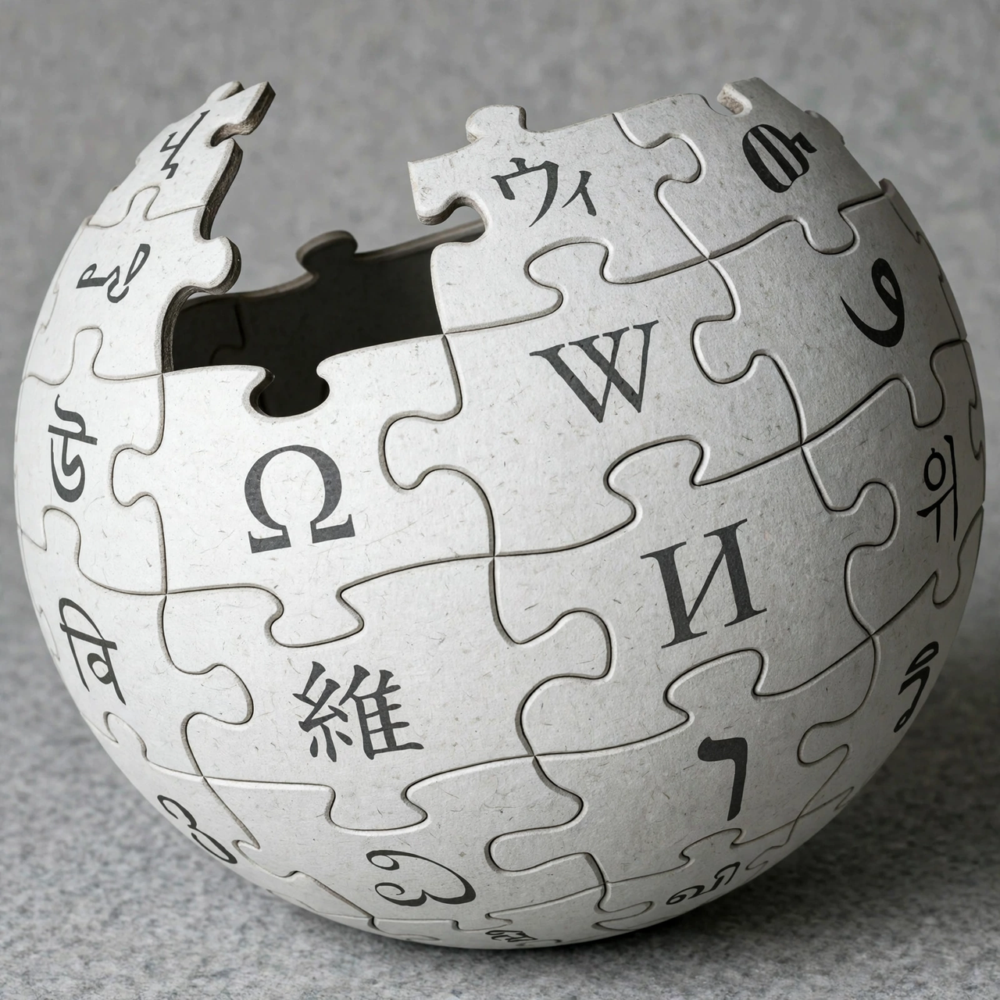

Wikipedia:About
Wikipedia is a free-content, multilingual online encyclopedia written and maintained by a community of volunteers, known as Wikipedians, through open collaboration and the wiki software MediaWiki. It is hosted by the non-profit Wikimedia Foundation. This page answers common questions about what Wikipedia is, who writes it, and how it works.
What is Wikipedia?
Wikipedia's purpose is to create a web-based, free-content encyclopedia of all branches of knowledge, in an atmosphere of mutual respect and cooperation. Articles are written from a neutral point of view, are verifiable against published sources, and contain no original research — together these are often described as core content policies. Anyone with internet access can edit most articles, and edits are visible immediately.
History
Wikipedia was launched on 15 January 2001 by Jimmy Wales and Larry Sanger. It began as a feeder project for Nupedia, an earlier expert-written free encyclopedia, but grew far faster than Nupedia and soon became an independent project. Sanger coined the name Wikipedia, a combination of wiki — from the Hawaiian word for quick, used for collaboratively editable websites — and encyclopedia. The English Wikipedia passed one million articles in 2006 and continued growing to more than six million articles, alongside editions in hundreds of other languages.

Who writes Wikipedia?
Volunteers. Tens of thousands of editors are active in any given month, from anonymous contributors to registered users with long track records. Experienced editors watch over recent changes, revert vandalism, and help newcomers. Some tasks are assisted by automated programs known as bots. Administrators are trusted editors given extra technical tools, such as the ability to block accounts and delete pages, after a community selection process.
How is it funded?
Wikipedia is hosted by the Wikimedia Foundation and is funded mainly by donations from readers, raised through fundraising banners and campaigns, together with grants. It carries no advertising. Donations support servers, staff and programmes that support the volunteer communities and Wikipedia's sister projects, such as Wikimedia Commons, Wikidata and Wiktionary.
Can I trust it?
Wikipedia aims to summarise what reliable published sources say, and articles cite their sources so readers can check them. Quality varies: featured articles have passed a demanding review, while short new articles may be incomplete. Readers are encouraged to check references, look at an article's history and talk page, and corroborate important information elsewhere.
See also
- Wikipedia (article about Wikipedia)
- Community portal
- Help pages
- Contents